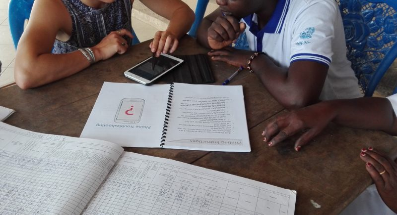
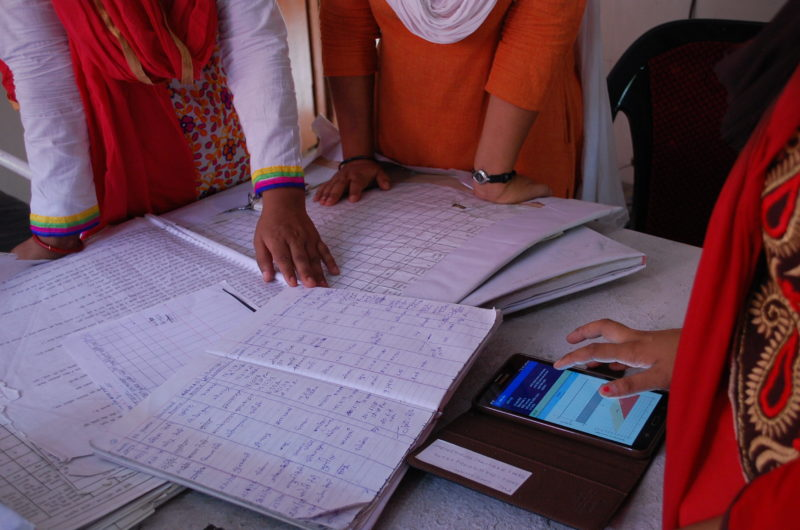

Strong survey data can be used for making decisions about programs, product choices, service delivery, and much more. But regardless of the survey goals, what you get out is what you put in, and the data is only as reliable as the surveys used to collect it.
Bias is often hard to see and can take time to recognize. However, careful review of a survey and all its questions can help you significantly reduce bias and increase the power of your data.
Working to remove bias from a survey can help you
- Measure what you actually want to measure
- Avoid hearing only what you want to hear
- Get feedback from different types of people
- Avoid unhelpful (or completely misleading) responses

More reliable data comes from more reliables surveys and makes your project better
3 Main Types of Survey Bias
There are three main types of survey bias to know: Sampling bias, non-response bias, and response bias.
Sampling bias is the bias that comes with only reaching out to a portion of your relevant audience. The best way to avoid it is to make your survey accessible through many channels to reach as many participants as possible (e.g. mobile and paper, outreach and facility-based, etc.).
Non-response bias comes when only a certain subset of the audience you reached out to actually respond to your survey, and that subset differs in a meaningful way from those that did not respond. Whether it’s a difference of gender, age, income, or any other factors, if you are unable to hear from them, your data will be biased because of the exclusion of the people who share that characteristic.
The type of survey bias we will focus on is response bias. This bias impacts the responses and affects the data directly. That means either the questions are asked in such a way that the answers are affected in one way or another.
There are a number of considerations you can make to help reduce bias in your surveys both before writing your questions and as you’re designing and reviewing the survey itself:
6 Considerations to Help Avoid Bias in Your Questions:
There are a few things you can look at or do up front that will help you avoid bias in the data you collect. If you have already written your survey, that’s okay, too. You can still work to reduce bias. Try reading your questions in reverse order to focus on them individually. The more time you spend creating strong, unbiased questions, the less time you spend dealing with unhelpful or biased responses.
Before writing your questions, think about:
- Survey objectives: Knowing what you want to measure is a key step to making sure you get strong feedback. Are you recording behavior? Attitudes? Something else? Develop a clear understanding of your data requirements before you start writing your questions, and you will make sure they stay focused. You don’t want to ask a question just because you can.
- Target audience: Who do you want to include in your survey? Develop a precise definition of who you need to collect data from. Then, consider what kind of language will be clear and understandable to that audience. Avoid jargon and use vocabulary that will be familiar to them. If you can, ask someone who fits that audience to complete your survey and review your questions for clarity and precision.
- Neutral response: Using an odd-numbered scale or including a neutral option between positive and negative responses gives participants the option to opt out of a response. By removing a neutral response you require participants to make a choice in their response, which can bring out more meaningful data. Of course, it can also lead to non-response for specific questions if respondents feel they do not have an answer that reflects their neutral position.
- Desirability bias: People want to come across in a favorable light. That means they will often respond in ways that highlight desirable traits and avoid displaying socially undesirable traits. Especially when your survey is about a sensitive topic, think about how neutral language might help you avoid that bias.
- Acquiescence bias: People will tell you what they think you want to hear. Before you write your questions, check to make sure it is not immediately obvious which answer you might want or expect. This is particularly important when considering different cultural expectations. In places where negative feedback is discouraged, consider how you can disassociate questions from the person administering the survey to mitigate the impact of acquiescence bias and collect cleaner, more honest data.
- Required questions: If a form is submitted with certain questions unanswered, they can render the entire submission unusable. That’s where required questions can come in. Be careful, though. If you overuse required questions, participants may leave the survey entirely when they face a question they can’t get the answer to, and you will miss out on all the data from that form. Be clear with your team ahead of time about which questions are required to make sure you don’t lose the rest of your data at the expense of a single question.

Review your questions together with the rest of your team
5 Considerations to Help Avoid Bias in Your Survey:
Once you have written your questions, the bias that can come from how they are delivered is just as important to work on. The order of questions or delivery method will affect the way the individual questions are understood.
- Delivery format: The pitfalls that lead to bias in surveys exist for both mobile data collection apps and paper-based surveys, and specific bias vulnerabilities exist in each format. Consider which suits your purpose best (it might even be both). For example, some sensitive questions might be easier to answer electronically or remotely than in a setting that requires handing in a paper response face-to-face.
- Question order: Create simple answer patterns that are easy to follow and organize questions by category or theme. General practice recommends that surveys start with broad questions, then proceed to more specific, targeted questions and finish with demographics or other logistics questions. With a digital delivery method, you might find that it makes sense to randomize questions, either overall or within their sections.
- Survey length: Are there too many questions in your survey? Avoid asking too much of the participant, and if you can’t shorten the survey, place more important questions near the beginning where the participant may answer them more fully before running out of energy (or running away).
- Informed consent: It’s more than just a checkbox. Promote honest feedback by ensuring that your survey participants know and understand the risks and benefits of taking your survey. What happens to their data? How might you be able to use it to help them?
- Validated surveys: Depending on what you are collecting information on, there may already be a validated survey that will work. These surveys have already been vetted and used, which means you can reliably compare your responses to data collected by other organizations with the same survey.
Your Quick Question Checklist:
Once you have written and organized your survey, look back through with this checklist to make sure you are avoiding some of these common mistakes:
Are your questions clear and specific?
Vague: What do you spend on health care?
Specific & clear: How much did you spend on out-of-pocket health care costs in the last year (in ZAR)?
Do your answer choices make sense?
Mismatched answers look like this:
Did you feel supported by your physician during today’s visit?
Answers: Strongly Agree, Agree, Neutral, Agree, and Strongly Agree.
Are you avoiding weighted or slanted statements?
Example of a slanted statement: How often do you engage in behavior that has a negative impact on your health?
Try to be more specific and less leading: In the past year, how many times have you [insert specific behavior]? (Note: This is also more specific!)
Do you ask questions twice (once positively and once negatively) to cross-reference responses?
Positive: I am able to take my medication when I need to. (Strongly Disagree - Strongly Agree)
Negative: I have trouble taking my medication on time (Strongly Disagree - Strongly Agree)
Are you avoiding “double-barreled” questions?
Example of a double-barreled question: I enjoyed the training session today and would like to attend another session in the future. (Answers range: Strongly agree - Strongly Disagree).
Try re-writing as two questions: i) I enjoyed the training session today; ii) I would like to attend another session in the future.

Your initial data will go a long way to revealing how you can better understand the results of your survey
Once your responses start rolling in
After you have been collecting data with your survey for a while, take the time to review again with fresh eyes. What do your questions actually measure? What don’t they measure?
The earlier example of the question about taking medication on time may tell you about adherence, but it doesn’t provide any information about why someone might be having difficulty taking their medication on time. Is it due to medication stock-outs? To lack of food? Or painful side effects? Consider adding open-ended questions to better understand the results of your survey.
Similarly, review your survey objectives and consider if you have completed them. Should you consider in-depth interviews and/or focus groups to provide more context on survey responses?
Consider the limitations and biases of your survey carefully, and don’t be afraid to put a name to them. Data and results that recognize and consider potential biases will be stronger than those that ignore or claim to have eliminated all biases. Just like when you perform QA on your mobile data collection app, there’s always more you can do to avoid bias!